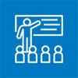
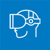

아카데미 활동
아카데미는 안경전문 교육기관으로써 다비치 안경만의 차별화 된 교육시설과 특성화된 교육 운영으로 개인의 업무 능력을 배가 시키고 실무 능력을 높여 고객에게 가장 적합한 렌즈와 안경을 제공합니다.
-

교육
교육 대상에 맞는 교육을 통한 인재 양성 및 관리, 고객님의 니즈에 맞는 다양한 상황별 교육커리큘럼을 진행· 가맹점 내 신규입사자를 포함한 약700여명의 안경사 교육
· 비전 컨설팅 시스템을 활용한 표준화 고객 응대 교육
· 우수 인재 확보를 위한 사회교육프로그램-맞춤식 실무교육, 학생 인턴쉽
-

R&D(연구개발)
고객 니즈의 변화, 앞서 나가는 안경 문화 시스템 정립을 위한 현장과 밀접한 다양한 프로젝트의 계획, 실행, 관리· 고객님께서 입장부터 나가실 때까지의 메뉴얼화 된 전문화 고객응대 시스템
· 고객만족을 넘어 고객 졸도를 위한 미래시장 개척-선진화된 외국의 시스템 도입
· 학교와 연계된 연구용역
-
상품개발
신제품 출시를 위한 사전 임상테스트, 가맹점의 공급된 제품의 품질테스트, 고객 니즈에 맞는 새로운 상품의 개발과 관리· 고객님의 눈건강을 위한 질좋은 상품을 제공하기 위한 제품의 임상테스트 및 상품 개발
· PB제품(자사브랜드)의 엄격한 품질 관리
-
매장 컨설팅
신규 오픈 매장의 오픈지원, 기존 매장의 메뉴얼을 통한 매장관리, 마케팅, 매장 운영 노하우 컨성팅· 고객 만족 경영을 위한 전매장의 표준화 업무 수행
· 현장 근무를 통한 "비전 컨설팅 시스템 개발"